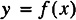

by Alan Parker
CRC Press, CRC Press LLC
ISBN: 0849371716 Pub Date: 08/01/93
|
|
Algorithms and Data Structures in C++
by Alan Parker CRC Press, CRC Press LLC ISBN: 0849371716 Pub Date: 08/01/93 |
| Previous | Table of Contents | Next |
This chapter presents the fundamental concepts for the analysis of algorithms.
N denotes the set of natural numbers, {1, 2, 3, 4, 5, . . .}.
Definition 2.1
A sequence, x, over the real numbers is a function from the natural numbers into the real numbers:
x1 is used to denote the first element of the sequence, x(1) In general,
and will be written as
Unless otherwise noted, when x is a sequence and f is a function of one variable, f(x), is the sequence obtained by applying the function f to each of the elements of x. If

then
For example,
Definition 2.2
If x and y are sequences, then x is of order at most y, written x ∈ O (y), if there exists a positive integer N and a positive number k such that
Definition 2.3
If x and y are sequences then x is of order exactly y, written, x ∈ Θ (y), if x ∈ Θ (y) and y ∈O (x).
Definition 2.4
If x and y are sequences then x is of order at least y, written, x ∈ Ω (y), if y ∈ O (x).
Definition 2.5
The time complexity of an algorithm is the sequence
where tk is the number of time steps required for solution of a problem of size k.
Example 2.1 Time Complexity
The calculation of the time complexity for addition is illustrated in Example 2.1. A comparison of the order of several classical functions is shown in Table 2.1. The time required for a variety of operations on a 100 Megaflop machine is illustrated in Table 2.2. As can be seen from Table 2.1 if a problem is truly of exponential order then it is unlikely that a solution will ever be rendered for the case of n=100. It is this fact that has led to the use of heuristics in order to find a “good solution” or in some cases “a solution” for problems thought to be of exponential order. An example of Order is shown in Example 2.2. through Example 2.4.
| Function | n=1 | n=10 | n=100 | n=1000 | n=10000 |
|---|---|---|---|---|---|
| log(n) | 0 | 3.32 | 6.64 | 9.97 | 13.3 |
| nlog (n) | 0 | 33.2 | 664 | 9.97×103 | 1.33×105 |
| n2 | 1 | 100 | 10000 | 1×106 | 1×108 |
| n5 | 1 | 1×105 | 1×1010 | 1×1015 | 1×1020 |
| en | 2.72 | 2.2×104 | 2.69×1043 | 1.97×10434 | 8.81×104342 |
| n! | 1 | 3.63×106 | 9.33×10157 | 4.02×102567 | 2.85×1035659 |
| Time | # of Operations |
|---|---|
| 1 second | 108 |
| 1 minute | 6×109 |
| 1 hour | 3.6×1011 |
| 1 day | 8.64×1012 |
| 1 year | 3.1536×1015 |
| 1 century | 3.1536×1017 |
| 100 trillion years | 3.1536×1029 |
One of the major motivations for using Order as a complexity measure is to get a handle on the inductive growth of an algorithm. One must be extremely careful however to understand that the definition of Order is “in the limit.” For example, consider the time complexity functions f1 and f2 defined in Example 2.6. For these functions the asymptotic behavior is exhibited when n ≥ 1050. Although f1 ∈ Θ (en) it has a value of 1 for n < 1050. In a pragmatic sense it would be desirable to have a problem with time complexity f1 rather than f2. Typically, however, this phenomenon will not appear and generally one might assume that it is better to have an algorithm which is Θ (1) rather than Θ (en). One should always remember that the constants of order can be significant in real problems.
Example 2.2 Order
Example 2.3 Order
| Previous | Table of Contents | Next |
){kind=link}
){kind=link}
){kind=link}